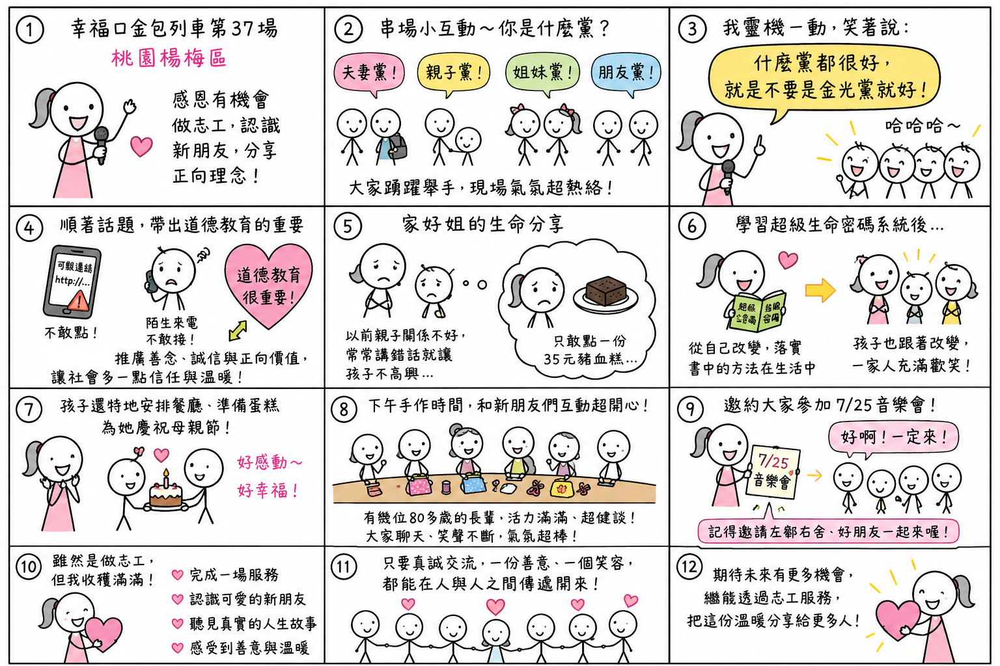

日期：2026/07/04

今天是幸福口金包列車第 37 場，這次來到桃園楊梅區擔任串場主持。第二次來到這個場地，很感恩又有機會透過志工服務，認識許多新朋友，也把正向的理念分享給更多人。
今天串場時，我先和大家玩了一個小互動，請大家分享今天是和誰一起來參加活動，有夫妻黨、親子黨、母子黨、姐妹黨、朋友黨……大家紛紛舉手回應，現場氣氛一下子就熱絡了起來。
就在這時，我靈機一動，笑著說了一句：「什麼黨都很好，就是不要是金光黨就好！」
沒想到，全場立刻哈哈大笑，氣氛瞬間被炒熱。
我也順著這個話題和大家分享，現在的社會和以前真的很不一樣。手機收到一個連結，不敢隨便點；接到陌生電話，也要先懷疑是不是詐騙。人與人之間，似乎多了一份戒心，少了一份信任。
也因為這樣，我更覺得道德教育真的很重要。天圓文化長期透過各種不同的公益活動，希望把善念、誠信與正向的價值觀分享給更多人，讓人與人之間多一點信任、多一點溫暖。我也邀請大家，有空可以來參加菁英會和音樂會，一起學習、一起成長。
今天另一個讓我印象很深刻的，就是家妤姐的分享。
她分享，以前和孩子的關係並不好，常常一句話沒說好，就容易讓孩子不高興。有一次和孩子一起出去吃飯，她因為怕造成孩子負擔，小心翼翼地只點了一份三十五元的豬血糕。聽到這裡，真的讓人很心疼。
後來開始學習超級生命密碼系統之後，她沒有一直期待孩子改變，而是先從自己開始調整，努力把書中的方法落實在生活中。
沒想到，當自己慢慢改變之後，孩子也跟著改變了。
現在一家人的相處充滿歡笑，孩子 adolescent 不但會主動帶她出去吃飯，還特地安排餐廳、準備蛋糕替她慶祝母親節。看到她分享時臉上幸福的笑容，我真的很替她開心。
這也讓我再次體會到，很多時候，當自己願意先改變，身邊的人真的也有機會慢慢跟著改變，家庭的氣氛也會越來越和諧。
下午手作的時候，也讓我感受到滿滿的活力。
今天參加的新朋友來自不同年齡層，其中有幾位八十多歲的長輩，特別讓我印象深刻。他們看起來比實際年齡年輕許多，精神奕奕、活力十足，而且每一位都很健談，和我們志工聊天、互動，現場笑聲不斷。
我也趁著聊天時邀請大家參加 7 月 25 日的音樂會，沒想到大家都很熱情地回答：「好啊！一定來！」因為活動地點就在社區附近，非常方便。我也笑著跟大家說：「不要只有自己來喔！記得把左鄰右舍、好朋友一起帶來！」
大家都笑著點頭，那份熱情真的很有感染力。
我發現，每個社區的新朋友都很有自己的特色。有些地方比較安靜，需要慢慢互動；有些地方則像今天一樣，大家都非常熱情，聊起天來就像認識很久的朋友一樣。
雖然今天是來當志工，但我反而覺得，自己才是收穫最多的人。
不只是完成了一場服務，更認識了一群可愛的新朋友，聽見了真實的人生故事，也再次感受到，只要願意真誠地交流，一份善意、一個笑容，都有機會在人與人之間慢慢傳遞開來。
期待未來還有更多機會，繼續透過志工服務，把這份溫暖分享給更多人。